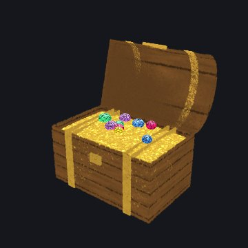
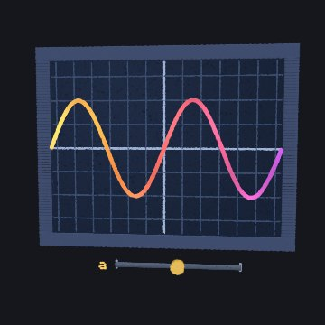
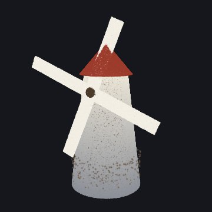
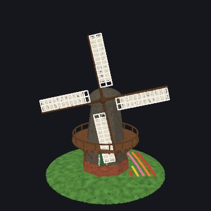
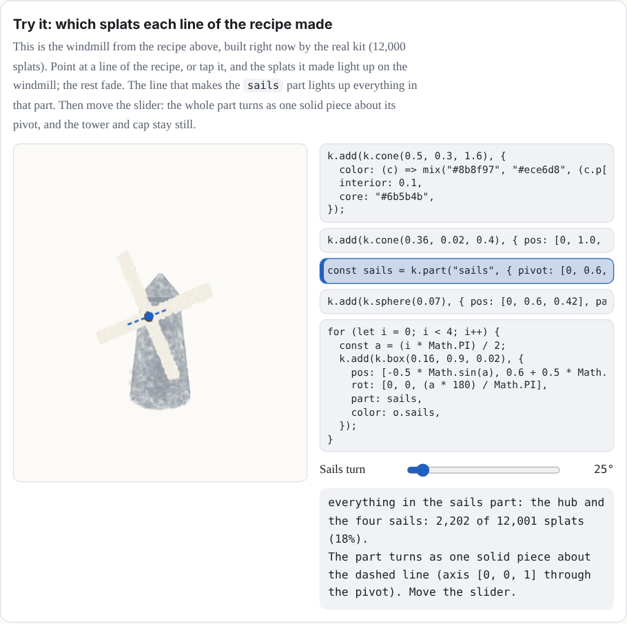
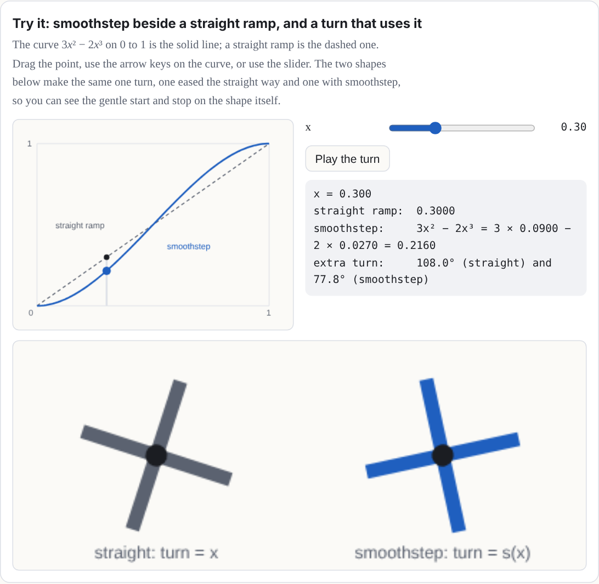

Definitions, derivations, notes, and long tables start folded.
Chapter 2How a toy is built
Nobody places Splashery's splats by hand. Most toys are recipes: short programs that describe a toy with a kit of shapes, and the kit fills them with splats when you open the toy. A recipe is a few kilobytes of code instead of megabytes of splats, and because every random choice comes from a seed, it builds the same splats with the same seed, options, and budget.
The kit is Splashery's toy-building library. A recipe names shapes, colors, and moving parts; the kit fills them with splats in the browser, spreading the budget evenly by area. A kit toy is built this way. A scan or capture is loaded from a file instead.
Recipes are written in JavaScript. This chapter is a tour, so you can read one; the complete guide is docs/PACKS.md in the source code [10].
Two places a toy lives
A toy's name and shelf go in a catalog entry (src/toys.js), and the toy
itself in a recipe in a pack file (src/packs/…js):
{
id: "little-windmill", // lower-case words joined by hyphens
label: "Little windmill", // its name on the shelf
category: "objects", // which shelf
kind: "kit",
pack: "my-pack", // loads src/packs/my-pack.js
}
A recipe has six basic parts, all optional except build (Chapter 5 adds
pictures, input, and tiltLock, and
PACKS.md
has more, such as grab and drag for touch play):
Show the table: the six parts of a recipe
build(k, o) |
Describes the toy with the kit k. o holds the chosen
options.
|
options |
Choices that rebuild the toy: a color, a style, a number of petals. They are saved in links. |
controls |
Live values from 0 to 1: sliders, toggles that ease on and off, and pulses that jump to 1 and fall back. |
action |
Which control a tap on the toy fires. |
drive(t, c, out) |
Runs every frame: from the time t and the controls c, it
sets how the parts move.
|
alive |
true when the toy moves by itself, so frames keep coming. |
Shapes from the kit
k.sphere(r), k.ellipsoid(a, b, c), k.box(w, h, d),
k.roundedBox(w, h, d), k.cylinder(r, h),
k.cone(r0, r1, h), k.torus(R, r), k.disc(r),
k.lathe(profile) (a vase or a bottle, turned around an axis),
k.tube(curve, radius) (a stem, an arm, a knot),
k.param((u, v) => [x, y, z]), any surface you can write in two variables
(the same idea as Chapter 3; here u and v each run from 0 to 1), and
k.radial((dir) => r), a blobby surface given by its distance from the middle
in every direction. Nothing is drawn until you add a shape:
k.add(k.sphere(0.2), { pos: [0, 1, 0], color: "#ffcc33", weight: 2 });
The kit shares the splats out between the shapes by their surface area, so the toy is evenly
dense; weight gives a small shape more (or share a fixed fraction
of all the splats). For free-form splats, like stars, sparks, and crumbs,
k.cloud places them one by one. After build, the kit centers the
toy and scales it to fit the view, so you can model in any units.
How many splats? What a bigger budget does
The kit spreads a budget of splats over a toy's surface (see Chapter 1 for the four
numbers). It is natural to think more splats always look better. The Kit lab measured it
(docs/lab/BUDGETS.md, October 10, 2026). It drew the same toy from the same
view on the same simulated 390 by 844 phone at five budgets, changing only the count. The
table compares 140,000 (the Mid tier) with 200,000 (the High tier) for 24 views of 22 toys.
These counts are base budgets: the number a tier asks for before the toy's own
density. A toy with density 2 asks for twice as many, up to the tier's most (240,000 at Mid
and 300,000 at High, from PROFILES in src/generators.js and
splatBudget in src/player.js). The American football, the hockey
puck, and the marble have density 2, so at the Mid and High base budgets they were asked for
240,000 and 300,000 splats, not 140,000 and 200,000. The small line under each toy in the
table gives the splats it actually got at the lowest and highest base budgets (from the
document), so the table is about what a bigger base budget does, not about a fixed count per
toy.
What the columns mean
- Edge is how many screen pixels the strongest edges take to go from 10 to 90 percent of the way between the two colors. A sharp edge is narrow, so lower is sharper.
- Speckle is how far pixels on the flatter half of the toy differ from the middle of their neighbors: grit on a smooth surface. Lower is cleaner. Painted grain, like the oak's bark, also counts, because it looks the same at phone size.
- Shimmer is how much the fine detail changes from one frame to the next while the toy turns a little. Lower is steadier.
- Area is how much of the screen the toy covers, as a percent of the same view at 400,000 splats. Over 100 percent means thin parts drawn fatter than they are. The table shows base budgets of 60,000 and then 140,000, because that is where the change is.
Same toy, same view, same phone, at a base budget of 140,000 splats → 200,000. A base budget is the number the tier asks for before the toy's own density; the small line under each toy gives the splats it actually got at the 60,000 and 400,000 base budgets. Lower is better in every column. Worse Better The same On a screen, the table scrolls sideways inside its box.
| Toy (view) | Edge (screen pixels) | Speckle | Shimmer | Area, base 60k → 140k |
|---|---|---|---|---|
| Lamp60,000 → 399,998 splats drawn at the 60k → 400k base budgets | 0.52 → 0.51 | 0.37 → 0.39 | 1.57 → 1.65 | 101% → 100% |
| American football120,000 → 600,000 splats drawn at the 60k → 400k base budgets | 0.50 → 0.48 | 0.61 → 0.70 | 1.49 → 1.60 | 100% → 100% |
| Hockey puck120,000 → 600,000 splats drawn at the 60k → 400k base budgets | 0.27 → 0.29 | 0.24 → 0.21 | 1.01 → 0.99 | 102% → 101% |
| Klein bottle48,000 → 320,000 splats drawn at the 60k → 400k base budgets | 0.56 → 0.53 | 0.52 → 0.90 | 1.12 → 1.33 | 100% → 99% |
| Clock60,000 → 400,000 splats drawn at the 60k → 400k base budgets | 0.51 → 0.49 | 0.49 → 0.54 | 1.64 → 1.90 | 101% → 100% |
| Penguin60,001 → 400,002 splats drawn at the 60k → 400k base budgets | 0.51 → 0.49 | 0.42 → 0.46 | 2.92 → 3.13 | – |
| Snow globe57,539 → 383,576 splats drawn at the 60k → 400k base budgets | 0.44 → 0.44 | 0.20 → 0.23 | 0.71 → 0.84 | 102% → 101% |
| White blood cell60,000 → 400,001 splats drawn at the 60k → 400k base budgets | 0.54 → 0.53 | 0.72 → 0.82 | 0.84 → 1.02 | 101% → 100% |
| Ocean liner53,356 → 355,780 splats drawn at the 60k → 400k base budgets | 0.46 → 0.44 | 0.31 → 0.35 | 1.69 → 2.09 | 106% → 104% |
| Marble120,001 → 600,001 splats drawn at the 60k → 400k base budgets | 0.46 → 0.45 | 1.43 → 1.65 | 2.63 → 2.96 | 100% → 100% |
| Sailboat60,000 → 400,002 splats drawn at the 60k → 400k base budgets | 0.50 → 0.46 | 0.51 → 0.59 | 2.26 → 2.93 | 103% → 103% |
| Toy piano60,189 → 400,004 splats drawn at the 60k → 400k base budgets | 0.60 → 0.56 | 0.22 → 0.25 | 1.93 → 2.32 | 111% → 105% |
| Your book113,837 → 446,581 splats drawn at the 60k → 400k base budgets | 0.52 → 0.55 | 0.00 → 0.00 | 1.17 → 0.46 | – |
| Chladni plate51,398 → 149,874 splats drawn at the 60k → 400k base budgets | 0.66 → 0.66 | 0.26 → 0.26 | 6.02 → 6.01 | 100% → 100% |
| Bicycle59,097 → 393,919 splats drawn at the 60k → 400k base budgets | 0.50 → 0.49 | 0.89 → 0.99 | 6.00 → 6.52 | 118% → 107% |
| Eiffel tower60,002 → 400,002 splats drawn at the 60k → 400k base budgets | 0.58 → 0.55 | 0.20 → 0.24 | 0.86 → 1.19 | 109% → 104% |
| Crystal lattice59,872 → 399,968 splats drawn at the 60k → 400k base budgets | 0.57 → 0.54 | 0.27 → 0.31 | 1.49 → 1.83 | 111% → 105% |
| Knot60,000 → 400,000 splats drawn at the 60k → 400k base budgets | 0.53 → 0.52 | 0.48 → 0.58 | 1.54 → 1.87 | 103% → 101% |
| Torus knot60,000 → 400,000 splats drawn at the 60k → 400k base budgets | 0.53 → 0.52 | 0.29 → 0.34 | 1.10 → 1.25 | 98% → 98% |
| Oak59,792 → 398,257 splats drawn at the 60k → 400k base budgets | 0.58 → 0.57 | 0.40 → 0.51 | 0.82 → 1.03 | 105% → 102% |
| Chess set58,249 → 387,829 splats drawn at the 60k → 400k base budgets | 0.58 → 0.52 | 0.14 → 0.15 | 2.44 → 3.09 | 106% → 103% |
| Dna59,986 → 400,020 splats drawn at the 60k → 400k base budgets | 0.51 → 0.50 | 0.50 → 0.57 | 4.06 → 4.53 | – |
| Bicycle (close up, 0.5)59,097 → 393,919 splats drawn at the 60k → 400k base budgets | 0.53 → 0.52 | 0.36 → 0.42 | 2.78 → 3.25 | 118% → 107% |
| Chess set (close up, 0.6)58,249 → 387,829 splats drawn at the 60k → 400k base budgets | 0.60 → 0.54 | 0.08 → 0.09 | 1.50 → 2.01 | 103% → 101% |
All five budgets across all the views: the middle value of each toy's change against its own result at a base budget of 140,000 splats.
| Base budget | Edge | Speckle | Shimmer | Thin parts' area |
|---|---|---|---|---|
| 60k | +11% | −23% | −36% | +1.2% |
| 140k | – | – | – | – |
| 200k | −2% | +14% | +18% | −0.8% |
| 280k | −6% | +31% | +39% | −0.8% |
| 400k | −9% | +52% | +61% | −1.2% |
What it shows
- Going from 140,000 to 200,000, speckle rose in 21 of the 24 views and shimmer rose in 21 of them (the counts are from the table). Across all the views the middle change was 14 percent more speckle and 18 percent more shimmer. Each splat gets smaller as the count goes up, so the fine detail in a pixel comes from more, smaller splats that move in and out of it as the view turns.
- Edges barely changed. The most any edge gained between the two budgets was 0.06 of a screen pixel, the middle change was 2 percent, and in two views the edge got a little softer.
- The one place a bigger budget clearly helps is thin parts. At 60,000 splats the bicycle's frame and spokes cover 18 percent more of the screen than at 400,000; at 140,000 they are within 7 percent. Solid toys, like the clock or the marble, stay within 1.5 percent of the 400,000 view even at 60,000 splats.
- No holes open at the lower budgets. A low budget makes thin parts fatter, not broken.
What it does not show: one renderer (a software one, not a real phone's graphics chip), one
phone size, still views with a slow turn, and no frame rate you could trust. Scans (captured
toys) are not affected, because they load their own files. The kit lab's recommendation was
to keep the four tiers as they are. The full tables, the method, and the limits are in
docs/lab/BUDGETS.md
and the first round of this question is in
docs/lab/SHARPNESS.md.
Colors from functions
A color can be a fixed quantity or vector ("#9c3b2c", or
[r, g, b] with each from 0 to 1; there are no color names), or it can be a
function that the kit calls for every splat. The function gets the splat's place
c.p, its surface direction c.n, its surface coordinates
c.u and c.v, and a random number and noise that come from the
seed. Return null to leave a hole:
color: (c) => (c.p[1] > 0.5 ? "#ffffff" : "#3a7d44"), // snow above, grass belowParts that hinge, spin or slide
A part is a group of shapes that moves as one solid piece:
k.part("lid", { pivot, axis }). Every frame, drive tells each part
where to be: an angle about its axis (a lid on a hinge, a wheel that spins), an
offset (a drawer that slides), a scale, or visible. A
toy may have up to 15 parts. The treasure chest's lid is a part on a hinge.
Why this number? Fifteen parts
Our choice, near a limit The format of the part number sets the count; the shader's space makes it hard to raise.
Every splat carries the number of the part it belongs to, and that number gets only 4 bits of a packed value, because the same value also holds two flags for the shader. Four bits count 16 things. Number 0 is the body, which every toy has, so 15 parts are left to name. Asking for a sixteenth stops the build with a message. The shader keeps three vector values for each of the 16 parts (a rotation, a pivot, and an offset with visibility), 48 in all.
If it were chosen differently. More parts means repacking the part number so the two flags move, moving the part table out of the shader's small set of uniform values and into a texture, and checking real phones. That is a change to the engine, not to a recipe. The kit has other ways to get many moving pieces: up to 48 tokens (game pieces moved and turned by their own offsets) and up to 96 levers in 6 groups (the piano keys).
Where it lives: part in src/kit.js; the part number in the
shader code of src/effects.js; MAX_TOKENS in
src/motion.js.
Could a toy use different parts?
Each recipe's choice
The 15 is a limit on how many parts a toy can have. It comes from the 4-bit part number.
Which pieces become parts is up to each recipe. A recipe makes a part with
k.part(name, { pivot, axis }) and puts shapes in it with part:.
The windmill makes one part for all four sails. A recipe could instead make one part per
sail, so each could turn on its own; it would then have used four of its 15.

The treasure chest: its lid is a part on a hinge.

The graph plotter: the a slider is a control.
Behaviors
Some motion is too fine for parts: a flame that flickers, snow that falls, grass that sways.
A behavior moves each splat on its own on the graphics card:
kind: "flame", "twinkle", "sway",
"orbit", "fall", "wave", and more.
Morphs give each splat a second place,
to: (c) => [x, y, z], and slide it there as one of four channels goes from 0
to 1. The Splat equation toy's motion is made of morphs.
A small, complete recipe
Here is a whole toy: a little windmill whose sails turn with a Wind slider, and a tap that blows a gust, spinning them once more around.
import { mix } from "../src/kit.js";
// A little windmill: a stone tower, a red cap, and four sails that turn in
// the wind. A tap blows a gust that spins them once more around.
export const RECIPES = {
"little-windmill": {
alive: true,
options: [{ key: "sails", label: "Sail color", type: "color", default: "#f2eee4" }],
controls: [
{ key: "wind", label: "Wind", type: "slider", default: 0.4 },
{ key: "gust", label: "Gust", type: "pulse", ease: 3 },
],
action: { key: "gust", label: "Blow a gust" },
drive(t, c, out) {
// The wind turns the sails; a gust adds one extra turn, eased in and
// out, so they end where they would have been anyway.
const g = c.gust > 0 ? 1 - c.gust : 0;
const extra = 2 * Math.PI * g * g * (3 - 2 * g);
out.parts.sails = { angle: t * (0.3 + 2 * c.wind) + extra };
},
build(k, o) {
// The tower: whitewashed stone, darker toward the ground.
k.add(k.cone(0.5, 0.3, 1.6), {
color: (c) => mix("#8b8f97", "#ece6d8", (c.p[1] + 0.8) / 1.6),
interior: 0.1,
core: "#6b5b4b",
});
// The cap.
k.add(k.cone(0.36, 0.02, 0.4), { pos: [0, 1.0, 0], color: "#9c3b2c" });
// The sails turn together, about an axis that points at you.
const sails = k.part("sails", { pivot: [0, 0.6, 0.42], axis: [0, 0, 1] });
k.add(k.sphere(0.07), { pos: [0, 0.6, 0.42], part: sails, color: "#4b3a2a" });
for (let i = 0; i < 4; i++) {
const a = (i * Math.PI) / 2;
k.add(k.box(0.16, 0.9, 0.02), {
pos: [-0.5 * Math.sin(a), 0.6 + 0.5 * Math.cos(a), 0.44],
rot: [0, 0, (a * 180) / Math.PI],
part: sails,
color: o.sails,
});
}
},
},
};
This recipe, built by the kit.

The Windmill on the shelf, a bigger toy built the same way.
Read it from the bottom up. build adds a cone for the tower (its color a
function of height), a smaller cone for the cap, and a part called "sails" with a hub and
four boxes, each turned a quarter turn more than the last. drive turns the
sails part: steadily with the wind, plus one extra turn while the gust pulse runs, eased
with the smoothstep curve
3g² − 2g³ (an S-shaped ramp that rises from 0 to 1 and is flat at both
ends [7]) so it starts and ends gently. A full extra
turn lands the sails where they would have been anyway, so nothing jumps when the gust ends.
Try it: which splats each line of the recipe made
This is the windmill from the recipe above, built right now by the real kit (12,000
splats). Point at a line of the recipe, or tap it, and the splats it made light up on the
windmill; the rest fade. The line that makes the sails part lights up
everything in that part. Then move the slider: the whole part turns as one solid piece
about its pivot, and the tower and cap stay still.

Try it: smoothstep beside a straight ramp, and a turn that uses it
The curve 3x² − 2x³ on 0 to 1 is the solid line; a straight ramp is the dashed one. Drag the point, use the arrow keys on the curve, or use the slider. The two shapes below make the same one turn, one eased the straight way and one with smoothstep, so you can see the gentle start and stop on the shape itself.

Run it yourself
You can run the windmill on your own computer in five steps. You need a copy of the Splashery source (download it from GitHub) and Python 3.
-
Save the recipe as a pack. Copy the module above into
src/packs/little-windmill.js, or copy manual/example-recipe.js. Change its first line toimport { mix } from "../kit.js";. A pack lives insrc/packs/, so the kit is one folder up. (The copy inmanual/says../src/kit.jsbecause it sits besidesrc/, not in it.) -
Add its catalog entry. In
src/toys.js, find the lineexport const TOYS = [and paste this right after it:
The{ id: "little-windmill", label: "Little windmill", category: "objects", kind: "kit", pack: "little-windmill", // loads src/packs/little-windmill.js },idmust match the key in the pack'sRECIPES. -
Serve the folder. In the source folder, run
python3 -m http.server 8000 --bind 127.0.0.1. The page needs a server because browsers will not load ES modules from a file address. -
Open the toy. Go to
http://127.0.0.1:8000/embed/index.html?toy=little-windmill. The embed page opens a catalog toy by its id. The windmill turns by itself. - Tap the windmill. The tap runs the recipe's action, the Blow a gust pulse: the sails spin one extra turn, easing in and out, and end where they would have been.
The same steps, as a prompt. If you work with a coding assistant, paste this into it, from inside your copy of the source folder:
In this copy of the Splashery source, please do exactly these steps and nothing else:
1. Create src/packs/little-windmill.js as a copy of manual/example-recipe.js, but change its
first line to: import { mix } from "../kit.js";
2. In src/toys.js, right after the line "export const TOYS = [", add this entry:
{ id: "little-windmill", label: "Little windmill", category: "objects", kind: "kit",
pack: "little-windmill" },
3. Start a local server in the source folder: python3 -m http.server 8000 --bind 127.0.0.1
4. Tell me to open http://127.0.0.1:8000/embed/index.html?toy=little-windmill and what to
expect: the sails turn by themselves, and a tap spins them one extra turn.
The Splat equation toy's text box takes equations (Chapter 3), not JavaScript recipes. A
recipe has to be a module in src/packs/, as above.